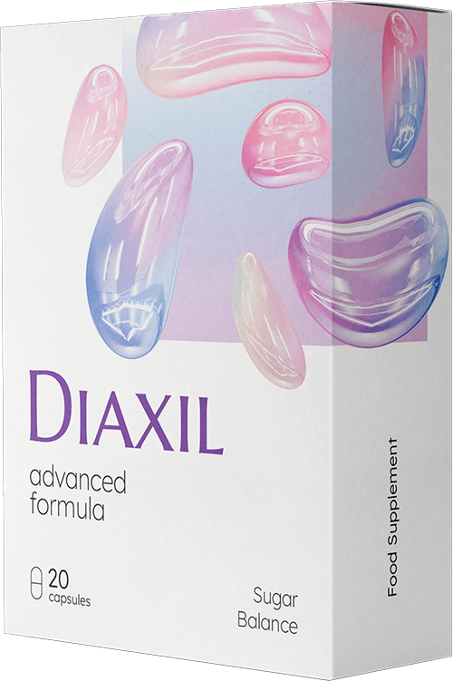

¡La diabetes tiene solución!
El principal concepto erróneo sobre la diabetes en España que acorta vidas…
¿Cómo llevar una vida plena como persona sana si tienes diabetes? ¿Cómo luchar contra ella? ¿Cómo
evitar más daños a tu salud haciendo caso a los consejos de médicos incompetentes y tomando
medicamentos peligrosos? Estas y otras muchas preguntas serán respondidas por el experto principal
en diabetes de España, el Dr. Javier Olmedo.
Experto en salud Francisco Javier Olmedo rara vez concede entrevistas, pero esta vez aceptó responder a las preguntas de nuestro reportero. A continuación, encontrarán toda la información necesaria que les ayudará a combatir la diabetes.
Experto en salud Francisco Javier Olmedo afirma que la ciencia contemporánea prolonga la vida con diabetes 15-20 años.
Temas tratados en esta entrevista:
- ¿Qué es lo más importante sobre tratamiento de la diabetes?
- ¿Por qué el 95% de los diabéticos no puede combatir esta enfermedad?
- ¿Puede un diabético vivir como una persona sana?
- ¿CUÁLES SON LAS FORMAS MODERNAS de combatir esta enfermedad?
Francisco Javier Olmedo, experto en salud:
Existen varios esquemas de tratamiento establecidos para la diabetes mellitus. La mayoría de las veces se basan en preparados que contienen Metformina.
Este medicamento combate los efectos de la diabetes: reduce los niveles de azúcar en sangre y hace que el organismo sea más sensible a la insulina. Pero no tiene ningún efecto sobre la causa de la enfermedad. Además, tiene efectos secundarios muy desagradables. Estos incluyen náuseas, vómitos, diarrea, dolor abdominal y falta de apetito.
Además, la ingesta de Metformina puede provocar consecuencias desagradables. Esto se demostró en los ensayos clínicos.
En los últimos años, las revistas médicas publicaron varios informes al respecto. En ellos se describe cómo la Metformina puede provocar Lactostasis, una complicación grave.
La lactostasis es un aumento de la cantidad de ácido láctico en la sangre. Sus síntomas son náuseas, vómitos, mareos y sensación de pánico. Entonces pueden aparecer problemas respiratorios, hepáticos y renales, y hay casos de confusión mental.
Y éstos no son los únicos efectos negativos del consumo de Metformina. Por algo está prohibida en más de 20 países.
Lista de las consecuencias del tratamiento con metmorfina:
- Trastornos gastrointestinales (principalmente diarrea, acidez, eructos, úlceras de estómago)
- Tensión arterial alta: hipertensión, sobre todo por la noche, dolores de cabeza, acúfenos, olas de temor
- Cirrosis hepática: el hígado se disuelve en tejido conjuntivo y ya no limpia la sangre, como consecuencia las toxinas se acumulan en el cuerpo.
- Cálculos renales debidos a la excreción abundante de sal y azúcar
- enfermedades oncológicas
- Ceguera
El desarrollo de la enfermedad depende, por supuesto, del tiempo y la cantidad de los productos que se toman, así como de las características individuales del cuerpo. ¡Pero ES COMPLETAMENTE IMPOSIBLE DESHACERSE DE ELLOS!
Si la metformina puede hacer daño, ¿por qué todavía se usa?
Experto en salud Francisco Javier Olmedo:
Desafortunadamente, hoy en día, muy pocos médicos se preocupan por la salud de sus pacientes. Les importan un rábano. Simplemente hacen su trabajo y obtienen dinero por ello. A ellos no les importa si ustedes se van a recuperar o no. Por eso, prescriben lo que el gobierno y el ministerio les dicen sin pensarlo. Estoy hablando de productos a base de metformina porque generan buenas ganancias, pero su efecto es solo temporal.
¡La indiferencia no cura! Por regla general, los pacientes no saben a qué tipo de consecuencias se van a enfrentar debido al uso de estos productos, y los médicos no creen que deban advertirles al respecto.
¡Es incorrecto tratar la diabetes con productos químicos agresivos! ¡Y la diabetes tipo 2 se puede curar! Lo más importante es elegir tratamiento adecuado.
A menudo, me llegan pacientes que habían estado tomando metformina durante años. Son personas enfermas que envejecen demasiado pronto.
Es normal. A los pacientes se les diagnostica diabetes tipo 2 principalmente por accidente durante los chequeos médicos regulares. En ese momento, el paciente generalmente no tiene problemas y ni siquiera piensa que podría tener unos altos niveles de azúcar, y luego, se le prescriben altas dosis de metformina.
Los niveles de azúcar bajan, eso sí, pero con el tiempo, la condición del paciente empeora. Comienza a quejarse de fatiga crónica, obesidad, hipertensión arterial, dolores de cabeza. Sus piernas se hinchan, así como su rostro por la mañana. Escucha zumbidos en sus oídos. Siente hormigueo en sus dedos, y sus piernas y manos se vuelven frías. Empeora su visión, y su memoria también.
Los médicos consideran que es diabetes, ¡pero todo esto sucede debido a la insulina! Para ser más precisos, ¡debido a la metformina que aumenta la producción de esta hormona hasta los puntos anormales!
Y NI SE LES OCURRA PENSAR QUE NO DEBEN TRATAR LA DIABETES. Si dudan entre usar la metformina para
su tratamiento o no tratar la diabetes, definitivamente deben elegir la primera opción. Si no la
tratan, la diabetes tipo 2 les matará aún más rápido, pero con diferentes síntomas.
¡Los vasos sanguíneos y los órganos internos no se deben tocar!
Imagínense una cereza o una frambuesa confitada. Lo mismo ocurre con todos los vasos sanguíneos en caso de diabetes. Las paredes de los vasos sanguíneos se llenan de azúcar y se endurecen. Como resultado, los vasos sanguíneos pierden su capacidad de estrecharse y ensancharse. Al principio, los primeros en dañarse son los vasos sanguíneos pequeños, y luego los medianos y los grandes. Los vasos sanguíneos llevan nutrientes a los órganos internos, y los trastornos del suministro de sangre provocan enfermedades crónicas.
Cómo la diabetes les destruye desde dentro:
Pérdida de visión
Diabetes y ceguera. Ceguera para siempre. No es posible recuperar la visión afectada por la diabetes, incluso con una cirugía láser porque la retina se separa como resultado de muchas hemorragias.
Destrucción del riñón
El azúcar simplemente obstruye las vías urinarias. Es por eso por lo que el entorno de los riñones se vuelve muy dulce. El azúcar es similar a los conservantes. Conserva los riñones que mueren gradualmente. La insuficiencia renal crónica es solo la punta del iceberg. Los riñones pueden dejar de funcionar por completo.
Pérdida de movilidad de las articulaciones
El líquido sinovial ofrece movilidad a las articulaciones. Cuando los vasos sanguíneos dejan de alimentar la articulación, deja de producirse líquido sinovial. La articulación se seca y se deteriora. El paciente siente un dolor insoportable. No ayudan ni los analgésicos. La articulación se cierra por completo, y el paciente pierde la capacidad de moverse de forma independiente.
Sistema nervioso indefenso
Los nervios, al igual que muchos otros órganos, se dañan debido al exceso de azúcar. Con el tiempo, los diabéticos se vuelven psicóticos y emocionalmente desequilibrados. Se deprimen a menudo y no hay nada que les haga sentirse bien. Lo único que quieren es quedarse dormidos y morir.
¡Pudrimiento de la piel!
Al principio, es extremadamente seca, hay grietas, eccemas y úlceras. Los músculos y los huesos se pudren a causa de la piel. Se produce un olor desagradable. Todo acaba en gangrena.
La diabetes es una enfermedad muy peligrosa. Quizás la más peligrosa de todas. Lo siento por las personas con el diagnóstico de diabetes. Intento ayudarles, pero todo depende de uno mismo.
Si no usa metformina, ¿cómo trata la diabetes? Tomemos, por ejemplo, a un jubilado normal y corriente que desarrolló diabetes con la edad. Sus niveles de azúcar en la sangre siguen aumentando. Supongamos que está tomando metformina y se siente mal. ¿Qué se puede hacer para tratar la diabetes? ¿Se puede curar?
Experto en salud Francisco Javier Olmedo:
Me gustaría mencionar, una vez más, que la diabetes tipo 2 es una enfermedad complicada, peligrosa y sistémica. No es un resfriado ni una diarrea. Es mucho peor. Esta enfermedad se propaga por todo el cuerpo y, por eso, tratamiento tiene que ser sistémico. ES PERJUDICIAL Y NO ES SUFICIENTE simplemente aumentar los niveles de insulina.
Tratamiento de la diabetes debe ser complejo y debe realizarse utilizando aquellos productos que no solo reduzcan los niveles de azúcar en la sangre, sino que también garanticen la seguridad para todo el cuerpo.
Si estamos hablando de productos específicos que las personas pueden usar para tratamiento independiente de la diabetes, recomendaría un producto como . Lo desarrolló el Centro mexicano de Endocrinología en . No es un producto químico como la metformina sino un COMPLEJO NATURAL PARA TRATAMIENTO DE LA DIABETES QUE TIENE MÁS DE 60 (!) COMPONENTES ACTIVOS DIFERENTES.
está un 80% compuesto de tintura de hojas de morera que es el estabilizador más poderoso del azúcar en la sangre. Es un componente natural y no tiene efectos secundarios, y los diabéticos pueden usarlo libremente.
es excelente porque no daña el cuerpo. Además, fortalece el cuerpo de los diabéticos. Lo más importante es que tiene efectos beneficiosos sobre la enfermedad en todos los sentidos.
¡La eficacia de es asombrosa! Cuando prescribimos estas cápsulas a nuestros pacientes, el 96% de ellos experimentó una bajada de los niveles de azúcar en la sangre hasta alcanzar unos rangos normales. Esto significa que pueden llevar una vida completamente normal con restricciones mínimas.
La carta más honesta sobre tratamiento de la diabetes
Me gustaría mostrarles una carta escrita por Emilia Prado, una jubilada de España. No fue tratada en nuestra clínica (no pudo llegar a nosotros porque se sentía mal), pero le recomendé por teléfono. Al final, esta mujer se curó.
Esto es lo que escribió.
"¿Por qué otros médicos ocultan de la gente el milagroso ? Antes tenía una horrible forma de la diabetes. Me la diagnosticaron a los 28 años. Cuando tenía 49, tuve serias complicaciones en mis ojos y riñones. No funcionaban en absoluto, olía a acetona. Mi hija ni siquiera podía sentarse a mi lado. Tenía úlceras en las piernas cada dos por tres, y las puntas de los pies estaban oscuras. Me estaba muriendo. Muchos otros médicos me dijeron que me quedaba poco tiempo.
Comencé a pensar que esos eran mis últimos días. Había tenido una vida muy bonita, pero no quería morir. Incluso cuando decía que quería morirme en los momentos de histeria, en realidad no lo quería. Su clínica fue mi última esperanza. Sabía que trataba la diabetes con éxito, pero no estaba al 100% convencida de eso. Todo el mundo decía que esta enfermedad no se podía curar y que iría a verle en vano. Por eso, no fui a su clínica, pero luego, le vi en televisión y decidí llamarle.
Muchas gracias por recomendarme y por enviarme . Comencé a usar este producto justo después de recibirlo. Han pasado cuatro meses desde entonces y aún sigo viva, y seguro que voy a vivir mucho tiempo, ya que los médicos me han dicho que tengo unos niveles de azúcar normales. Yo también puedo sentirlo. ¡No me he sentido tan saludable y libre de diabetes durante los últimos 10 años! He comenzado a dormir bien de nuevo, se ha ido la sed constante, he dejado de ir al baño todo el tiempo, ya no tengo fatiga y debilidad todo el tiempo. Mi presión arterial también ha dejado de subir. Mi visión ha mejorado. Aún estoy en tratamiento, pero estoy convencida de que voy a sobrevivir. ¡Muchas gracias por !"
¿Podría decirnos cuánto dura tratamiento con ?
Experto en salud Francisco Javier Olmedo:
No es un proceso rápido. En promedio, el
ciclo de tratamiento con lleva unos 2 meses.
Deben estar preparados para un tratamiento a largo plazo, pero una vez que haya finalizado, se librarán de los síntomas que les molestan y podrán llevar una vida normal y saludable como antes de la diabetes.
ayuda a todo el mundo, incluidas las personas mayores con un sistema inmunitario debilitado.
Voy a describirles las fases tratamiento.
Restauración de los vasos sanguíneos
no solo reduce los niveles de azúcar en la sangre, sino que además previene su aumento. Sin un exceso de azúcar, las paredes de los vasos sanguíneos se expanden y se contraen libremente. De esta forma, los vasos sanguíneos se limpian de trombos y se restauran los pequeños capilares. Se normaliza la presión arterial, la debilidad y la somnolencia desaparecen, las heridas, cortes y hematomas cicatrizan más rápido.
Normalización de los niveles de glucosa
no aumenta los niveles de insulina y, por lo tanto, es seguro. Tiene un efecto extremadamente beneficioso y reduce la resistencia a la insulina, lo que es una propiedad muy buena. Los componentes biológicamente activos de este producto penetran directamente en las células de los músculos, las grasas y el hígado, y las estimulan para que empiecen a reaccionar mejor a la presencia de hormonas en la sangre. En medicina, este proceso se denomina "formación de células secundarias". Como consecuencia de esto, las células comienzan a consumir glucosa activa con el tiempo, lo que conduce a una disminución de su concentración en la sangre. Esta es la forma más segura para que el cuerpo use la glucosa.
Los pacientes comienzan a sentirse bien en cualquier momento del día, incluso después de las comidas. Ya no tienen sed y no más eccemas ni erupciones. Desaparece ese desagradable olor de los genitales. Los pacientes dejan de ir al baño con frecuencia.
Si hablamos de indicadores físicos, se produce una disminución de los niveles de hemoglobina glicosilada, una disminución de la concentración de azúcar y acetona en la orina.
¡Bajada de peso!
Al perder 10 kg de sobrepeso, el riesgo de desarrollar consecuencias peligrosas de la diabetes se reduce casi un 50%.
Posible normalización
Muchos diabéticos no tienen suficiente energía. Uno de los fascinantes efectos de las cápsulas es la normalización de los niveles de testosterona y la restauración de la potencia sexual. Los hombres pueden tener relaciones sexuales incluso a los 50 o 60 años.
Mejora del estado de la piel, los huesos y los músculos
Incluso se regenera la piel muy dañada. Se curan las úlceras, la piel deja de supurar y secarse. Lo mismo ocurre con los huesos, ya que se restaura su composición saludable y dejan de crujir. Se produce la regeneración de todos los tejidos, y los músculos recuperan su elasticidad.
¡Efecto mariposa para todos los diabéticos!
El efecto de es similar al efecto de las alas de mariposa, lo que provoca la reacción en cadena de la curación de los órganos internos y la mejora de la salud en general. Comienza con la normalización de la acción de los vasos sanguíneos y finaliza con la restauración de la visión y las articulaciones.
Despertar fácil
Se despiertan y se levantan de la cama fácilmente por la mañana. Ya no tienen que esforzarse para levantarse, estirar y masajear las piernas, la espalda y el cuello rígido. Por la mañana, su cuerpo está lleno de energía y fuerza.
Excelente estado y humor
Por la mañana y durante todo el día. Duermen tranquilos y lo suficiente. Se sienten rejuvenecidos. No tienen que ir al baño por la noche. No les duele nada y no tienen un olor desagradable.
Desayuno delicioso
Pueden llenar su menú de diversos productos, puesto que ya no tienen que seguir una dieta estricta. Pueden comer aquello que siempre habían querido. No más dietas bajas en carbohidratos. ¡Disfruten del sabor de sus platos favoritos!
Fuerza heroica
Cuando salen de casa, ya no tienen que preocuparse por sus piernas: caminar no es una tarea desagradable para ustedes, pueden hacerlo todo el día, y sus piernas no se cansan ni se hinchan. Las sandalias, los zapatos y los calcetines no dejan marcas en los pies hinchados como una cuerda en una salchicha.
Silencio completo
Están completamente tranquilos y relajados. Ya no tienen dolores constantes que perturban su conciencia y no les permiten concentrarse en nada más. Cuando no les duele nada, las cosas ordinarias son más agudas, como los sonidos o los olores que olvidaron hace mucho tiempo.
Recuperación de la visión
Incluso la visión gravemente dañada comienza a recuperarse gradualmente. Lo que veían antes a través de la niebla se vuelve claro. Pueden ver la cantidad de autobuses desde lejos y disfrutar nuevamente de la belleza de la naturaleza.
Y, lo más importante, ¡prolongan su vida! Se sentirán saludables y alegres incluso en la vejez. Sus seres queridos no tendrán que cuidar de ustedes porque podrán cuidar de sí mismos.
¡Deficiencia de en las farmacias de España!
Por lo que sabemos, es muy difícil comprar . Este producto rara vez está disponible, ¿no es así? ¿Y qué recomendaría a todos los diabéticos de España?
Sí, así es. se vende en lotes limitados y, por lo tanto, no llega a las farmacias. Desafortunadamente, una gran parte va al extranjero y es comprada por clínicas privadas.
Pero tengo buenas noticias para los lectores de su revista: he hablado con mis compañeros y hemos decidido destinar una parte del lote de a sus lectores con descuento. Enviaremos este producto por correo directamente al domicilio del paciente, a cualquier parte de España.
Estas son las condiciones para obtener .
Tienen que:
- Vivir en España. No enviamos al extranjero.
- Pueden ordenar SOLO PARA USO PERSONAL. Pedimos a los revendedores que no revendan para obtener beneficio. ¡No es humano ganar dinero con personas enfermas! se enviará a una sola persona en la cantidad necesaria para tratar a UNA persona (o dos si hay varios diabéticos en la familia).
Para participar en nuestro programa, deben hacer clic en el botón Girar en la ruleta con los descuentos más abajo. Dependiendo de lo que muestre la ruleta, podrán obtener con un cierto descuento. Pueden hacer girar la ruleta solo una vez.
¡Aprovechen esta oportunidad antes que otra persona!
Desafortunadamente, no tenemos suficiente cantidad de este producto para todos los diabéticos de España. Por eso, hemos decidido enviarlo a todos los que dejen una solicitud en la web más rápido que otros. Si desean tratar la diabetes con este complejo único, les aconsejo que lo ordenen lo antes posible mientras aún esté en stock.